Parallax 2D
Giới thiệu
Parallax là hiệu ứng mô phỏng chiều sâu bằng cách cho các texture di chuyển với tốc độ khác nhau so với camera. Godot cung cấp node Parallax2D để tạo hiệu ứng này. Tuy vậy, vẫn rất dễ mắc lỗi, nên trang này mô tả chi tiết một số thuộc tính và cách khắc phục một số lỗi thường gặp.
Ghi chú
Trang này hướng dẫn cách dùng Parallax2D, node được khuyến nghị dùng thay cho các node ParallaxLayer và ParallaxBackground.
Bắt đầu
Node parallax hỗ trợ thêm các node con có khả năng kết xuất, nên bạn có thể dùng một hoặc nhiều node để tạo nên mỗi layer. Để bắt đầu, hãy đặt mỗi node hoặc nhóm node bạn muốn cuộn độc lập làm con của một node parallax riêng. Đảm bảo góc trên bên trái của các texture được dùng nằm tại giao điểm (0, 0), như trong hình dưới đây. Xem phần định vị để hiểu vì sao điều này quan trọng.
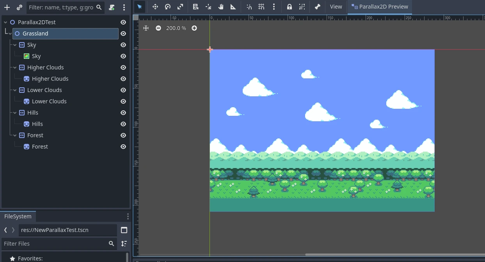
Scene trên dùng một texture đã chuẩn bị sẵn cho lớp mây cao trong một Sprite2D, nhưng bạn cũng có thể dễ dàng dùng nhiều node đặt cách nhau để tạo nên layer.
Scroll scale
Cốt lõi của hiệu ứng parallax là thuộc tính scroll_scale. Nó hoạt động như hệ số nhân tốc độ cuộn, cho phép các layer di chuyển với tốc độ khác camera trên mỗi trục được đặt. Giá trị 1 khiến node parallax cuộn cùng tốc độ với camera. Nếu bạn muốn hình ảnh trông xa hơn khi cuộn, hãy dùng giá trị nhỏ hơn 1, với 0 khiến nó đứng yên hoàn toàn. Nếu muốn thứ gì đó trông gần camera hơn, hãy dùng giá trị lớn hơn 1 để nó cuộn nhanh hơn.
Scene trên gồm năm layer. Một số giá trị scroll_scale phù hợp có thể là:
(0.7, 1)- Rừng(0.5, 1)- Đồi(0.3, 1)- Mây thấp(0.2, 1)- Mây cao(0.1, 1)- Bầu trời
Video dưới đây cho thấy các giá trị này ảnh hưởng đến việc cuộn trong game như thế nào:
Lặp vô hạn
Parallax2D cung cấp thêm một hiệu ứng tạo ảo giác texture lặp lại vô hạn. repeat_size báo cho node nhảy vị trí tới hoặc lùi khi camera cuộn được một khoảng bằng giá trị đã đặt. Hiệu ứng này được tạo bằng cách thêm một bản lặp cho tất cả canvas item con, dịch đi một khoảng bằng giá trị đó. Khi camera cuộn giữa hình ảnh và bản lặp của nó, node âm thầm nhảy lùi lại, tạo cảm giác hình ảnh lặp vòng.
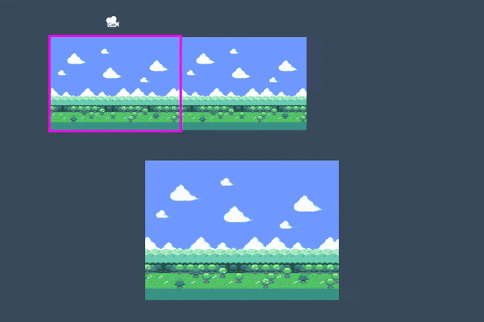
Vì là hiệu ứng tinh tế, người dùng chưa quen rất dễ thiết lập sai. Hãy cùng xem "như thế nào" và "tại sao" của một vài vấn đề thường gặp.
Kích thước không phù hợp
Hiệu ứng lặp vô hạn dễ làm việc nhất khi bạn có một hình ảnh được thiết kế để lặp liền mạch và có kích thước bằng hoặc lớn hơn viewport trước khi đặt repeat_size. Nếu không có được asset thiết kế cho việc này, bạn vẫn có thể làm một số việc khác để chuẩn bị hình ảnh tốt hơn về mặt kích thước.
Đây là ví dụ về một texture quá nhỏ so với viewport:
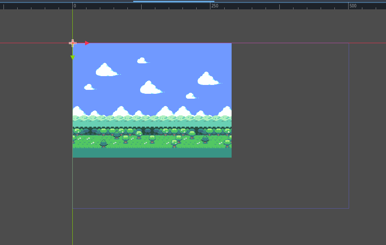
Ta thấy kích thước viewport là 500x300 nhưng texture là 288x208. Nếu đặt repeat_size bằng kích thước hình ảnh, hiệu ứng lặp vô hạn sẽ cuộn không đúng vì texture gốc không phủ kín viewport. Nếu đặt repeat_size bằng kích thước viewport, ta sẽ có một khoảng trống lớn. Vậy phải làm gì?
Làm viewport nhỏ hơn
Cách đơn giản nhất là làm cho viewport có kích thước bằng hoặc nhỏ hơn texture. Trong Project Settings > Display > Window, hãy thay đổi các cài đặt Viewport Width và Viewport Height cho khớp với background.
Scale Parallax2D
Nếu bạn không hướng tới phong cách pixel-perfect, hoặc không ngại hình hơi mờ, bạn có thể chọn phóng to texture cho vừa màn hình. Đặt scale của Parallax2D, và tất cả texture con sẽ được scale theo.
Scale các node con
Tương tự như scale Parallax2D, bạn có thể scale các node Sprite2D đủ lớn để phủ kín màn hình. Lưu ý rằng một số cài đặt như Parallax2D.repeat_size và Sprite2D.region_rect không tính đến scale, nên cần điều chỉnh các giá trị này dựa trên scale.
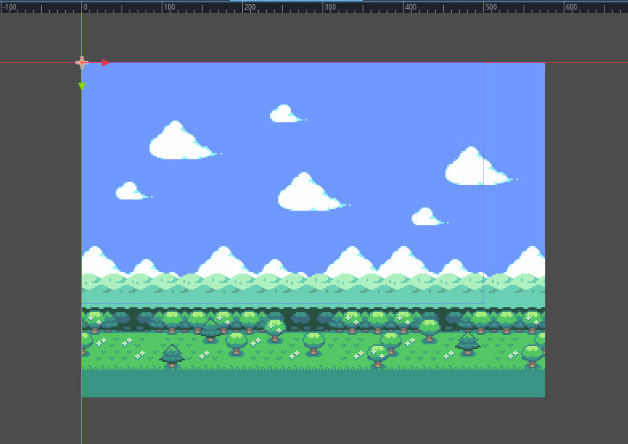
Lặp các texture
Bạn cũng có thể khởi đầu đúng hướng bằng cách chuẩn bị các node con từ sớm. Nếu có một Sprite2D muốn lặp nhưng quá nhỏ, bạn có thể làm như sau để lặp nó:
đặt region_enabled thành
trueđặt region_rect thành một bội số của kích thước texture, đủ lớn để phủ kín viewport.
Bên dưới, bạn có thể thấy việc lặp hình ảnh hai lần giúp nó đủ lớn để phủ kín màn hình.
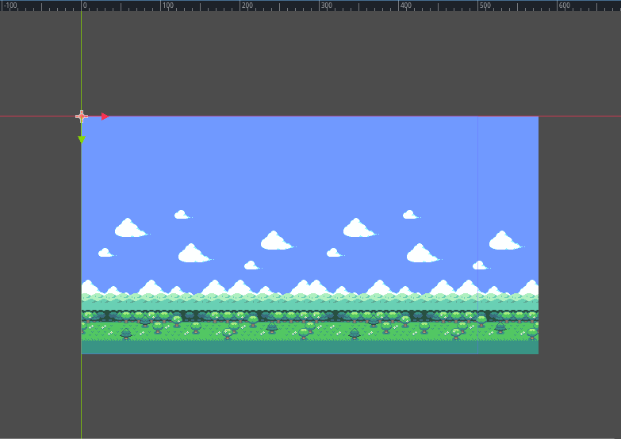
Vị trí không phù hợp
Người dùng thường đặt nhầm tất cả texture căn giữa tại (0,0):
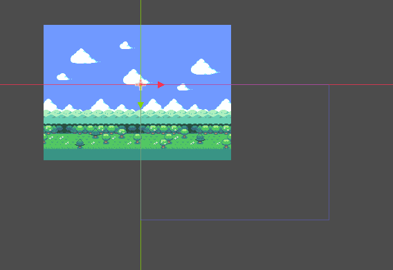
Điều này gây vấn đề với hiệu ứng lặp vô hạn và nên tránh. "Canvas lặp vô hạn" bắt đầu tại (0,0) và mở rộng xuống dưới, sang phải tới kích thước bằng giá trị repeat_size.
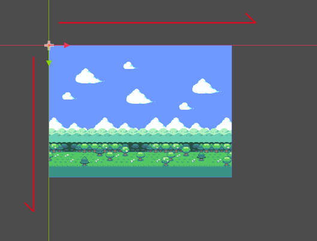
Nếu các texture được căn giữa tại giao điểm (0,0), canvas lặp vô hạn chỉ được phủ một phần, nên nó chỉ lặp một phần.
Tăng repeat_times có khắc phục được không?
Về mặt kỹ thuật, tăng repeat_times sẽ có tác dụng trong một số tình huống, nhưng đó là giải pháp chữa cháy và không phải vấn đề mà nó được thiết kế để giải quyết (chúng ta sẽ bàn về điều này ngay sau đây). Cách khắc phục tốt hơn là hiểu cách hiệu ứng lặp hoạt động và thiết lập texture parallax phù hợp ngay từ đầu.
Trước tiên, hãy kiểm tra xem có texture nào tràn sang phần âm của canvas không. Đảm bảo các texture dùng trong node parallax nằm gọn trong "canvas lặp vô hạn" bắt đầu tại (0,0). Khi đó, nếu Parallax2D.repeat_size được đặt đúng, kết quả sẽ trông giống như thế này, với một vòng lặp duy nhất của hình ảnh có kích thước bằng hoặc lớn hơn viewport:
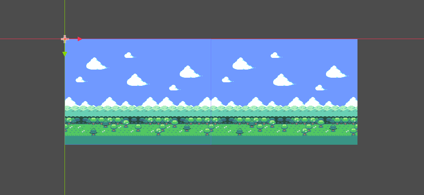
Nếu hình dung cách hình ảnh cuộn qua màn hình, ban đầu nó hiển thị phần bên trong hình chữ nhật đỏ (xác định bởi repeat_size), và khi tới phần bên trong hình chữ nhật vàng, nó đẩy hình ảnh lên phía trước để tạo ảo giác cuộn mãi mãi.
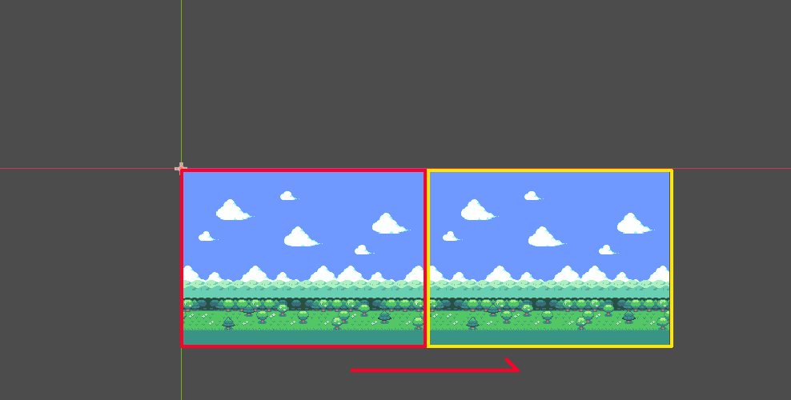
Nếu hình ảnh được đặt lệch khỏi "canvas lặp vô hạn", khi camera tới hình chữ nhật vàng, một nửa hình ảnh sẽ bị cắt mất trước khi nó nhảy tới, như trong hình dưới đây:
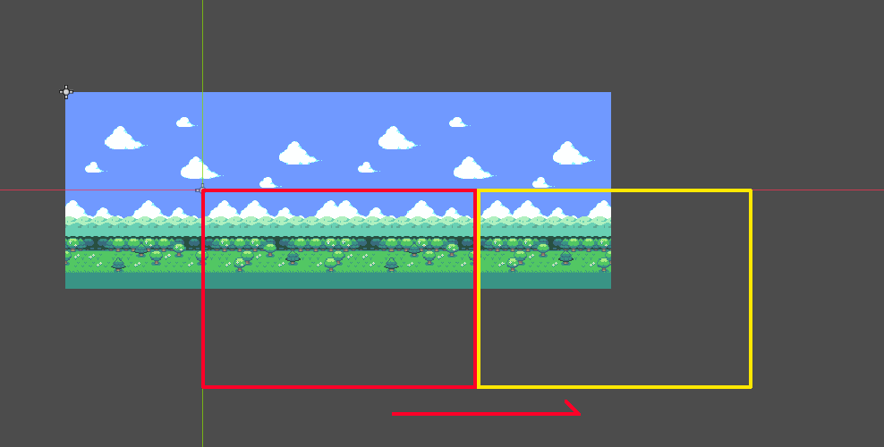
Scroll offset
Nếu texture parallax đã hoạt động đúng nhưng bạn muốn nó bắt đầu tại một điểm khác, Parallax2D có thuộc tính scroll_offset dùng để dịch điểm bắt đầu của canvas lặp vô hạn. Ví dụ, nếu hình ảnh có kích thước 288x208, đặt scroll_offset thành (-144,0) hoặc (144,0) sẽ cho phép nó bắt đầu từ giữa hình ảnh.
Repeat times
Lý tưởng nhất là khi làm theo hướng dẫn này, texture parallax của bạn đủ lớn để phủ kín màn hình kể cả khi thu nhỏ. Cho đến giờ, chúng ta có một texture 288x208 vừa khít bên trong viewport 288x208. Tuy nhiên, vấn đề xảy ra khi thu nhỏ bằng cách đặt Camera2D.zoom thành (0.5, 0.5):
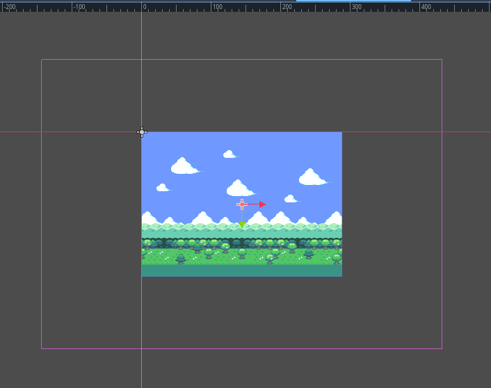
Dù mọi thứ đã được đặt đúng cho viewport ở mức zoom mặc định, việc thu nhỏ khiến nó nhỏ hơn viewport, làm hỏng hiệu ứng lặp vô hạn. Đây là lúc repeat_times phát huy tác dụng. Khi đặt giá trị 3 (thêm một bản lặp phía sau và một phía trước), nó giờ đã đủ lớn để đáp ứng hiệu ứng lặp vô hạn.
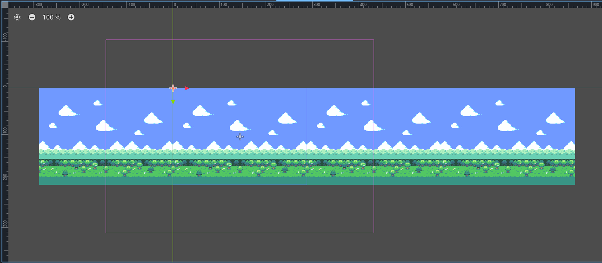
Nếu các texture này cần lặp theo chiều dọc, chúng ta sẽ chỉ định giá trị y cho repeat_size. Khi đó repeat_times cũng sẽ tự động thêm một bản lặp phía trên và phía dưới. Đây chỉ là parallax theo chiều ngang, nên nó để lại một khoảng trống phía trên và phía dưới hình ảnh. Giải quyết thế nào? Cần sáng tạo một chút! Trong ví dụ này, chúng ta kéo dãn bầu trời lên cao hơn và sprite cỏ xuống thấp hơn. Giờ các texture hỗ trợ cả mức zoom bình thường lẫn thu nhỏ còn một nửa.
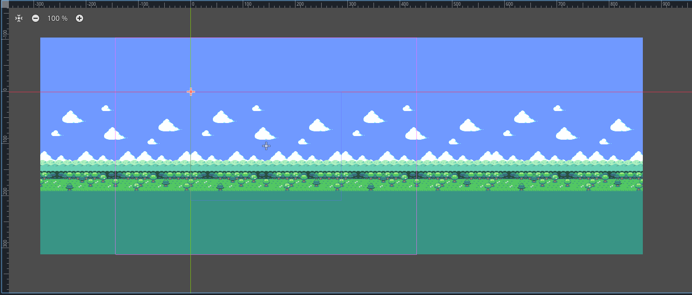
Chia đôi màn hình
Hầu hết bài hướng dẫn làm game chia đôi màn hình trong Godot đều bắt đầu bằng việc viết một script nhỏ để gán Viewport.world_2d của SubViewport thứ nhất cho SubViewport thứ hai, để chúng dùng chung hiển thị. Câu hỏi thường gặp là làm sao để dùng chung hiệu ứng parallax giữa cả hai màn hình.
Hiệu ứng parallax giả lập phối cảnh bằng cách thay đổi vị trí của các texture khác nhau tương ứng với camera. Điều này dĩ nhiên gây khó khăn nếu bạn có nhiều camera, vì texture không thể ở hai nơi cùng lúc!
Vẫn có thể làm được bằng cách nhân bản các node parallax vào SubViewport thứ hai (hoặc thứ ba, thứ tư). Đây là thiết lập cho một game hai người chơi:
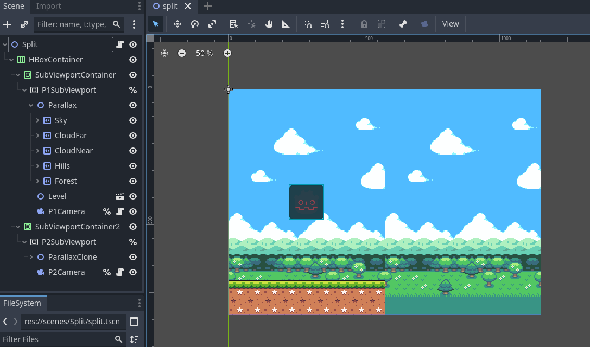
Tất nhiên, giờ cả hai background đều hiển thị trong cả hai SubViewport. Điều chúng ta muốn là mỗi parallax chỉ hiển thị trong viewport tương ứng. Có thể đạt được bằng cách làm như sau:
Để tất cả node parallax ở visibility_layer mặc định là 1.
Đặt canvas_cull_mask của SubViewport thứ nhất chỉ gồm layer 1 và 2.
Làm tương tự với SubViewport thứ hai nhưng dùng layer 1 và 3.
Cho các node parallax trong SubViewport thứ nhất một node cha chung và đặt visibility_layer của nó thành 2.
Làm tương tự với các node parallax của SubViewport thứ hai, nhưng dùng layer 3.
Cách này hoạt động thế nào? Nếu một canvas item có visibility_layer không khớp với canvas_cull_mask của SubViewport, nó sẽ ẩn tất cả node con, kể cả khi các node con có khớp. Chúng ta tận dụng điều này, để các SubViewport loại bỏ việc kết xuất các node parallax có node cha không mang visibility_layer được hỗ trợ.
Xem trước trong trình chỉnh sửa
Trước bản 4.3, khuyến nghị là đặt mỗi layer vào một ParallaxBackground riêng, bật thuộc tính follow_viewport_enabled và scale từng layer. Phương pháp này luôn khó làm đúng, nhưng vẫn có thể thực hiện bằng cách dùng CanvasLayer thay cho ParallaxBackground.
Ghi chú
Một khuyến nghị khác là addon "Parallax2D Preview" của KoBeWi. Nó cung cấp một vài chế độ xem trước khác nhau và rất tiện lợi!